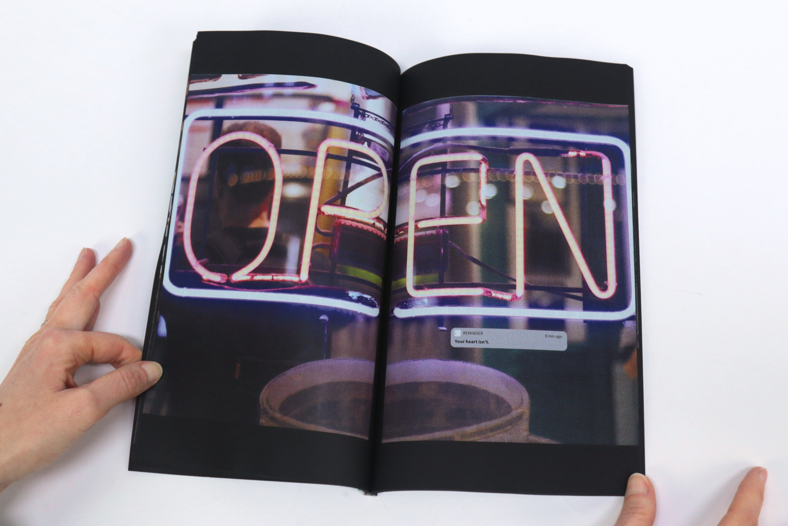
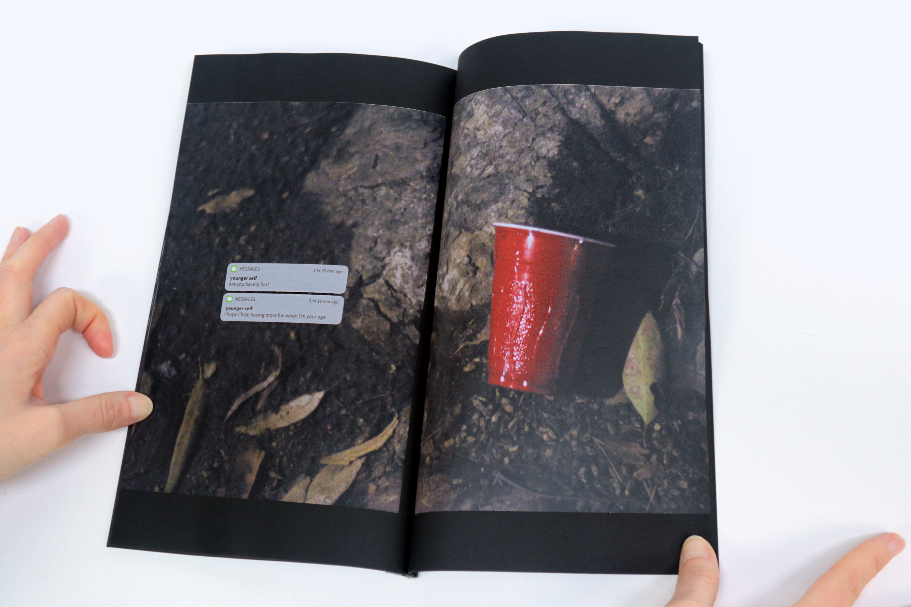
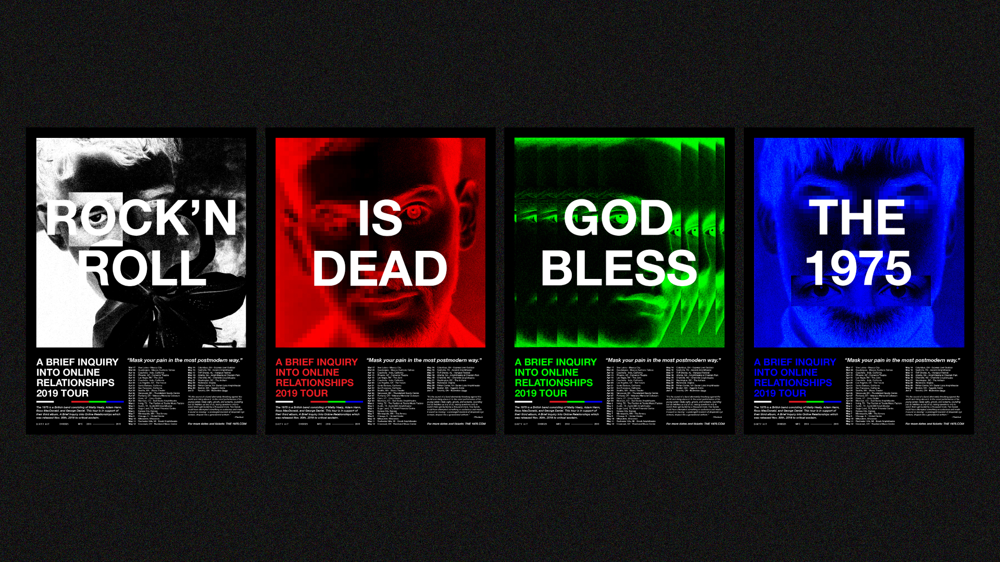
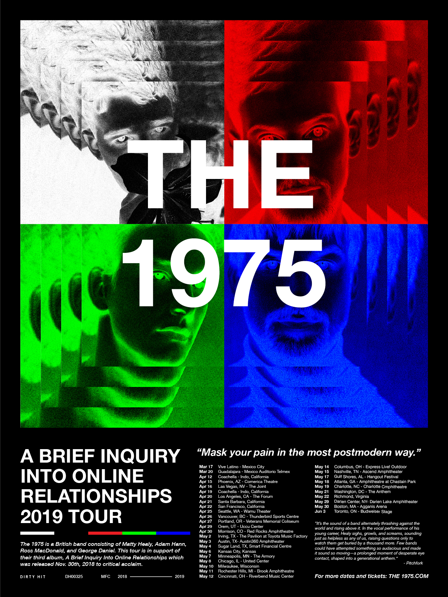
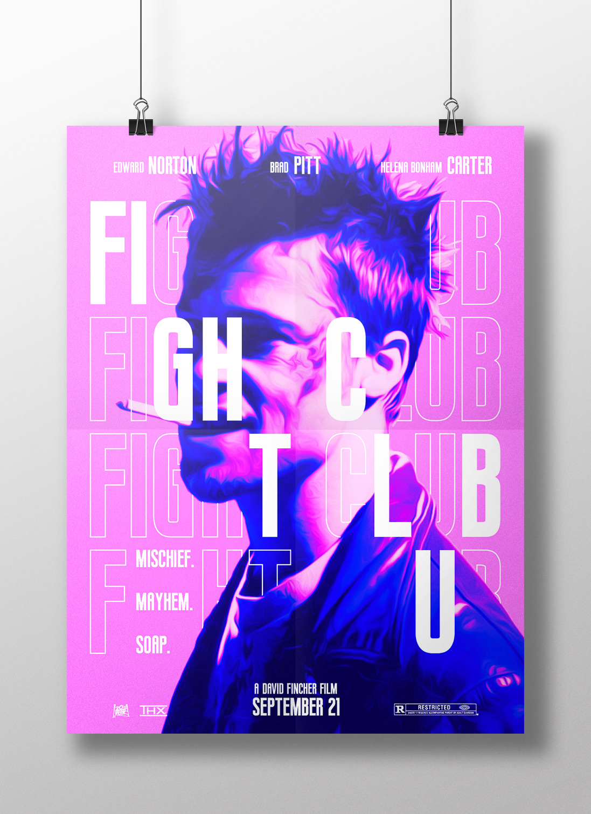

Hollywood Reporter: Art Intern
This past summer, I was an Art Intern at the Hollywood Reporter. As an Art Intern, I designed pages for regular and special issues of the magazine, managed an archive of previous issues, and assisted the team by completing various impromptu
and daily
office tasks.
*Designs begin from a standardized template to streamline the design process and maintain brand consistency, and are changed as needed to adapt to each stories needs.
*Designs begin from a standardized template to streamline the design process and maintain brand consistency, and are changed as needed to adapt to each stories needs.


Allen's Hummingbird: A Scientific and Poetic Study
Allen’s Hummingbird: A Scientific and Poetic Study encompasses ten weeks of research, studies, and observations on this native Californian bird. Highlighting the birds cultural and scientific significance across a four-page pamphlet, it
serves as a liaison between humans and the natural world. The final design is also a summation of numerous research and design drafts and proposals.
Throughout my research, I observed the bird simultaneously inhabiting widely varying descriptions at the same time. Much like its movements, the Allen’s can never be truly defined nor confined to a single space physically or culturally. It is both dynamic and graceful, powerful and delicate, wild and precise. Culturally it represents night and day, life and death, the ephemeral and the eternal.
To portray this flux, simultaneously everywhere yet impossible to pin down to a single definition, I forwent the typical book format. Instead I leveraged an accordion fold, with its ability to envelop the reader in text, photo, illustration, and data all at once while contrasting the poetic and scientific. On one side is a poem which spoke to my experience, along with an abstraction of Allen’s flight paths in the form of a single brushstroke. On the other side lies the scientific with photographs, researching findings and observations, and the complete map of the Allen’s flight patterns.
While I do not necessarily see myself in the bird, my studies have allowed me to think deeper and more critically about the concept of identity. How it is in constant motion, adapting and changing as we explore life and its endless amounts of joy and hardship. While we can never fully understand another creature, person, or being, the Allen’s taught me that the best thing we can do, is to sit and listen.
Throughout my research, I observed the bird simultaneously inhabiting widely varying descriptions at the same time. Much like its movements, the Allen’s can never be truly defined nor confined to a single space physically or culturally. It is both dynamic and graceful, powerful and delicate, wild and precise. Culturally it represents night and day, life and death, the ephemeral and the eternal.
To portray this flux, simultaneously everywhere yet impossible to pin down to a single definition, I forwent the typical book format. Instead I leveraged an accordion fold, with its ability to envelop the reader in text, photo, illustration, and data all at once while contrasting the poetic and scientific. On one side is a poem which spoke to my experience, along with an abstraction of Allen’s flight paths in the form of a single brushstroke. On the other side lies the scientific with photographs, researching findings and observations, and the complete map of the Allen’s flight patterns.
While I do not necessarily see myself in the bird, my studies have allowed me to think deeper and more critically about the concept of identity. How it is in constant motion, adapting and changing as we explore life and its endless amounts of joy and hardship. While we can never fully understand another creature, person, or being, the Allen’s taught me that the best thing we can do, is to sit and listen.


Kanye West: My Beautiful Dark Twisted Fantasy
Across a double LP cover, poster, and book containing forty unique designs, I explored and reimagined Kanye West’s critically acclaimed 2011 album, My Beautiful Dark Twisted Fantasy. Through critical and conceptual analysis of the song,
album, artist, and where it stands in popular culture today, I was able to expand on the work and present a well-known artist in an entirely new way.
Emphasizing the LP’s themes of hedonism, paranoia, and introspection, the designs push a balance of artistic experimentation and commercial familiarity.
Emphasizing the LP’s themes of hedonism, paranoia, and introspection, the designs push a balance of artistic experimentation and commercial familiarity.


Message: Error
Combining poetry, photography, and the iPhone interface, Message: Error tells an ambiguous story that explores how our emotions are built, maintained, and eventually deteriorated digitally.
What seems like a typical night out for a college student expands into an exploration of youth, loneliness, love, identity, and empathy, and what the phone means for the future of our relationships.
What seems like a typical night out for a college student expands into an exploration of youth, loneliness, love, identity, and empathy, and what the phone means for the future of our relationships.


The 1975: Poster Series
Released in 2018, The 1975’s third album attempts to encapsulate the ways in which the internet mediates and influences our lives and emotions. Following the critical and commercial success, the band embarked on a world tour in support of the
album.
Experimenting with the album’s themes of internet culture, physical reality vs. digital reality, and the concept of a distorted screen, I created a series of posters to support the tour.
Experimenting with the album’s themes of internet culture, physical reality vs. digital reality, and the concept of a distorted screen, I created a series of posters to support the tour.


Fight Club: Poster Series
In this 1999 cult classic featuring Edward Norton, Brad Pitt, and Helena Bonham Carter, an office worker and soap maker team up to run an underground boxing ring.
In order to exemplify the characters unpredictable personalities while still uniting them all under one coherent identity, I contrasted the film’s dark and gritty aesthetic through the use of bright, fluorescent colors and bold typography.
In order to exemplify the characters unpredictable personalities while still uniting them all under one coherent identity, I contrasted the film’s dark and gritty aesthetic through the use of bright, fluorescent colors and bold typography.
